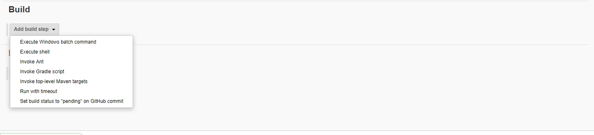

- Download jenkins.war
- Copy to ~/Downloads/
- Type hostname on the command line and note the [hostname] down
- java -jar ~/Downloads/jenkins.war
- When above command is executed on the screen, at the end, there will be a secret key which will be displayed.Copy this key.
- Now open your web-browser and type "http://[hostname]:8080" . This will access the jenkins server
- Put the earlier copied key here.

- Next click on Install suggested plugins . This will download all the basic plugins and will take 5-10min based on internet speed
- Click on "New Item" at the top left-hand side of your dashboard

- In the next screen
- Enter the name of the item you want to create. We shall use the "Hello world" for this demo.
- Select Freestyle project
- Click Okay

- Enter the details of the project you want to test.

- Now that you have provided all the details, it's time to build the code. Tweak the settings under the build section to build the code at the time you want. You can even schedule the build to happen periodically, at set times.
- The format for specificying the time format is detailed in the top right (?) question mark symbol on the top right

- Select Build Step to be "Execute Shell". Here you can type in shell commands or source other shell scripts

- You can add Post Build Step to send Email Notification, based on a particular confition of the build.
- References